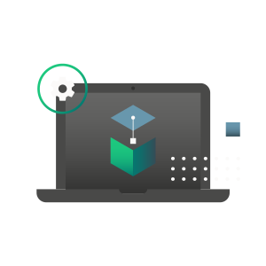
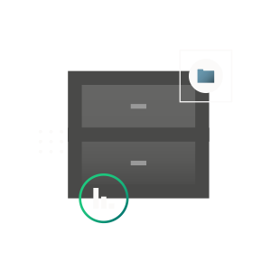
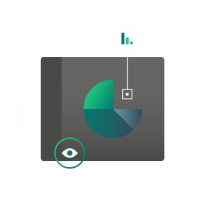

Rendimiento en el trabajo
Supervisar el progreso. identificar los pasos para cumplir el objetivo evaluar que tanto congenia en las tareas reconocer el exito de cada uno evaluar si posee el tamano adecuado sea adaptable a cada proyecto cuente con los recursos adecuados
Ejecucion de tareas
Desglose de tareas verificación de que las tareas cumplan con los objetivos propuestos ordenamiento de tareas fijar tiempos de ejecución definicion de los responsables de las tareas o grupo de ellas estimacion de costos de ejecución
Almacenamiento
Cada usuario tendra 15 GB de almacenamiento libre para cumplir con sus responsabilidades en el sistema, el cuál se podra usar de manera libre y sencilla con facil uso.
Progreso rápido
Todos los empleados tiene la oportunidad de avanzar y realizar de una manera más eficaz las tareas asignadas a cada uno de ellos.
Diseño y Usabilidad

Nos enfocamos en un diseño mas minimalista para los usuarios con una interface mas interactiva para tener una mejor experiencia interactiva
Soporte

Se le brindará soporte a los usuarios que permanezcan y usen la aplicación de manera continua, evitando que e estos tengan problemas y de ser asi, sean solucionados de manera inmediata.